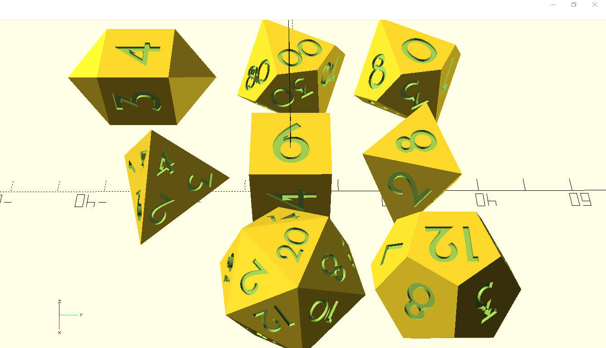
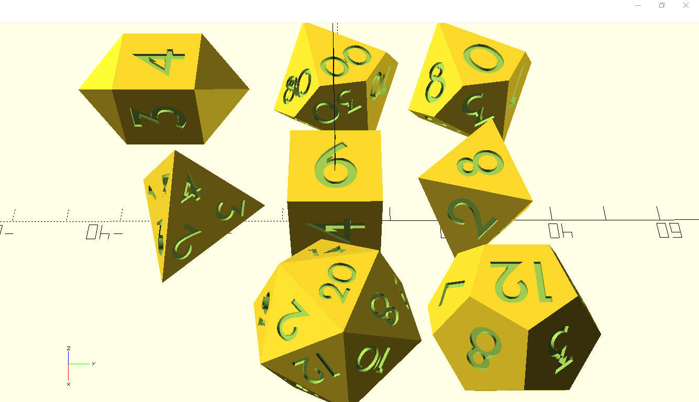
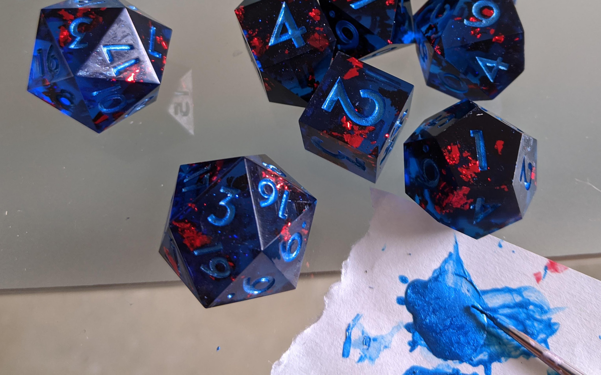

Designing
My first step is picking a font and designing 3D models of my dice. This is done entirely on PC using Adobe Illustrator and Blender. The dice are then rendered and imported into slicing software to prepare supports for printing.
My first step is picking a font and designing 3D models of my dice. This is done entirely on PC using Adobe Illustrator and Blender. The dice are then rendered and imported into slicing software to prepare supports for printing.
Once the files are ready, I move them over to my Anycubic Photon, which is a small resin 3D printer. It takes about 7 hours on average to print a plate of dice.
The finished prints are cleaned, cured, sanded, and polished. This is one of the most labor-intensive steps: the results must be as perfect as possible because they'll be used as Masters to make molds from. Any flaws on the masters will show up on every set made from them.
My molds are made by pouring liquid silicone over my masters and curing them in a pressure chamber. I do this twice at 50PSI to make two-part lidded molds that have no bubbles and won't warp under pressure. I currently use Smooth-On's Dragonskin 30, so this takes at least 32 hours total.
The silicone degrades with use, so this step has to be repeated about once or twice a month.
.jpg)
.jpg)
Final product dice are made using a 2-part epoxy resin that starts in liquid form and can be tinted and poured into molds using various techniques for different effects. This is probably the funnest step for me, but also the most hazardous for health, and must be done in full respirator, gloves, etc.
The filled molds are cured under pressure at 20-40 PSI for 24 hours, then the dice are removed from the molds and let sit for 3 days to fully harden.
Once fully hardened, the dice can be cleaned up and have their numbers painted in with a tiny brush. This is harder than it sounds, as there are many small numbers and corners that tend to catch bubbles, which turn into holes after drying.
The last step is the final polishing. The newer the molds, the less polishing has to be done, so this can vary from none to hours of going over everything again.
